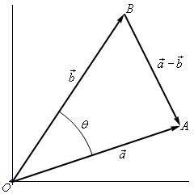
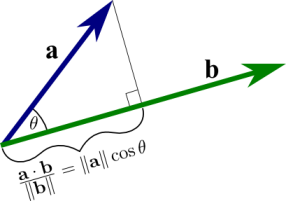

Bu yazıda ileride hocanın tam değinmediği konuları tanıştırmaya uğraşacağız.
Vektörler
Bir vektör bir yön ve büyüklüktür, başlangıç noktası olarak genellikle orijin kabul edilir. 1,2, ya da daha fazla boyutta bir sayı listesi ile gösterilebilir, tek boyutta ise bu tabii ki bir skalar ile aynı şeydir [5].
Toplamak
İki boyutta bir örnek görelim, iki vektör $a,b$ var, toplamları
Toplam sanki birinci vektörü alıp diğerinin bittiği yerden başlatmak gibi, varılan yeri gösteren yeni vektör toplam vektörüdür. Çıkartmak ise aynı yerden başlayan iki vektörde birinin sonundan diğerine sonuna giden vektörü bulmak gibidir. Aslında toplam üzerinden çıkartma doğrulabilir, $a-b$ düşünürken $-b$ diye yeni bir vektör yaratırız (yani vektörü tersine çeviririz) ve $a+(-b)$ ile toplam işlemini yaparız.
Çıkartmak

Kosinüsler Kanunu (Law of Cosines)
Şöyle bir üçgen olduğunu düşünelim [1],

Eğer, mesela C'nin 90 derece olduğunu bilseydik, Pitagor kuralından
$$ c^2 = a^2 + b^2 $$
diyebilirdik. Ama $C < 90$ ise, farklı bir formül kullanılabilir,
$$ c^2 = a^2 + b^2 - 2 a b \cos C $$
Eğer $C=90$ ise $\cos(90) = 0$ olduğu için Pitagor kuralını elde ettiğimizi görürüz.
Üstteki kurala Kosinüsler Kanunu denir, ispatı şöyle,

Üstteki üçgene bakarsak,
$$ c^2 = (a \sin C)^2 + (b-a\cos C)^2 $$
$$ = a^2 \sin^2 C + b^2 - 2 a b \cos C + a^2 \cos^2 C $$
$$ c^2 = a^2 + b^2 - 2 a b \cos C $$
Noktasal Çarpım
İki boyutta iki vektör $\vec{a},\vec{b}$ olduğunu düşünelim. Bu vektör ögelerini $\vec{a} = [a_1, a_2]$ ve $\vec{b} = [b_1, b_2]$ diye gösterirsek, noktasal çarpım $\vec{a} \cdot \vec{b}$ her iki vektörün tekabül eden öğelerinin çarpımının toplamıdır, yani
$$ \vec{a} \cdot \vec{b} = a_1 b_1 + a_2 b_2 $$
Daha yüksek boyutlarda benzer işlem devam ettirilir.
Norm
Bir vektorun uzunlugunun, buyuklugunun, ya da normu, ki $||\vec{a}||$ ile gosterilebilir, karesi
$$ ||\vec{a}||^2 = \vec{a} \cdot \vec{a} $$
Bu kurallara uygun çünkü
$$ (\vec{a} \cdot \vec{a})^2 = a_1 a_1 + a_2 a_2 $$
Ya da
$$ ||\vec{a}|| = \sqrt{\vec{a} \cdot \vec{a}} = \sqrt{a_1 a_1 + a_2 a_2} $$
Aslında büyüklük formülü Pitagor üçgen formülünden hareketle de anlaşılır çünkü herhangi bir vektör düşünürsek, $a_1,a_2$ ya da $x$ ekseninde $a_1$ $y$ ekseninde $a_2$ olan bir nokta düşünürsek bu noktaya olan orijinden olan uzaklık (vektör) Pitagor formülü ile hesaplanabilirdi, $\sqrt{a_1^2 + a_2^2}$.
Noktasal çarpım şu şekilde de hesaplanabilir,
$$ \vec{a} \cdot \vec{b} = ||\vec{a}|| ||\vec{b}|| \cos\theta $$
İspat
Alttaki şekle bakarsak,

Bu üçgenin kenarları arasında Kosinüsler Kanunu uygularsak,
$$ ||\vec{a}-\vec{b}||^2 = ||\vec{a}||^2 + ||\vec{b}||^2 - 2 ||\vec{a}|| ||\vec{b}|| \cos\theta \qquad (1) $$
Norm açılımından hareketle
$$ ||\vec{a}-\vec{b}||^2 = (\vec{a}-\vec{b}) \cdot (\vec{a}-\vec{b}) $$
Noktasal çarpımı parantezler üzerinden açarsak,
$$ = \vec{a}\cdot\vec{a} - \vec{a}\cdot\vec{b} - \vec{b}\cdot\vec{a} + \vec{b}\cdot\vec{b} $$
$$ = ||\vec{a}||^2 - 2\vec{a}\cdot\vec{b} + ||\vec{b}||^2 $$
(1) formülünde sol tarafı üstteki formülle açarsak,
$$ ||\vec{a}||^2 - 2\vec{a}\cdot\vec{b} + ||\vec{b}||^2 = ||\vec{a}||^2 + ||\vec{b}||^2 - 2 ||\vec{a}|| ||\vec{b}|| \cos\theta $$
$$ - 2\vec{a}\cdot\vec{b} = - 2 ||\vec{a}|| ||\vec{b}|| \cos\theta $$
$$ \vec{a}\cdot\vec{b} = ||\vec{a}|| ||\vec{b}|| \cos\theta $$
Üstteki eşitlik veri analizinde kullanışlı bulunmuştur, mesela kimisi müşterileri $D$ boyutunda vektörler olarak temsil edebilir, 1. öğe yaş, 2. öğe boy, vs. gibi bilgiler olabilir ve iki vektörün birbirine ne kadar "yakın" olduğu iki vektörün arasındaki açısal uzaklık üzerinden ölçülebilir,
$$ \cos\theta = \frac{\vec{a}\vec{b}}{||\vec{a}|| ||\vec{b}||} $$
Eğer vektörler baştan normalize edilmiş ise bölme işlemine de gerek kalmaz, tek bir noktasal çarpım ile kabaca bir benzerlik ölçütü elde edilmiş olur.
Bir diğer kullanım alanı fizikte "yapılan iş" hesabı. İş, uygulanan kuvvet çarpı mesafeden elde edilir fakat mesela bir kuvvet alanı $\vec{F}$ her yerde farklı olabilir ayrıca bu alanda belli bir $\vec{d}$ yolunda hareket eden bir parçacığı düşünürsek, parçacık bazen kuvvete karşı bazen onunla beraber hareket ediyor olabilir, bunun ne oranda olduğunun hesabı $\vec{F}$'yi $\vec{d}$ üzerine skalar olarak yansıtmakla hesaplanır [3], $W = \vec{F} \cdot \vec{d}$.
Diklik
İki vektörün birbirine dik olup olmadığı (orthogonality) testi de noktasal çarpım ile yapılır. $\cos(90) = 0$ olduğuna göre $\vec{a}\cdot\vec{b}$ çarpımı sıfır ise iki vektör dik demektir.
Yansıtma (Projection)
Vektör $\vec{a}$'nin $\vec{b}$ yönündeki büyüklüğü, yansıması nedir sorusunun cevabı da noktasal çarpım ile bulunabilir,
$$ \vec{a}\cdot\vec{b} = ||\vec{a}||||\vec{b}||\cos\theta $$
formülünü biraz manipüle edersek cevabı alabiliriz,
$$ \frac{\vec{a}\cdot\vec{b}}{||\vec{b}||} = ||\vec{a}|| \cos \theta $$

Eşitliğin sağ tarafı $||\vec{a}|| \cos \theta$ aradığımız büyüklük, onu elde etmek için $\frac{\vec{a}\cdot\vec{b}}{||\vec{b}||}$ noktasal çarpımını kullanabileceğimizi görüyoruz [4].
Eğer büyüklüksel, skala yansımasını bulabiliyorsak, bir vektörün diğeri yönündeki tamamen yansımasını da bulabilirdik, $\vec{b}$ yönünü $\frac{\vec{b}}{||\vec{b}||}$ birim vektörü ile gösteriyoruz, o yöndeki $\vec{a}$ büyüklüğünü biraz önce bulduk, $\frac{\vec{a}\cdot\vec{b}}{||\vec{b}||}$.
Yönü büyüklük ile çarpınca istenilen vektör elde edilmiş olur [3], $\vec{a}$'nin $\vec{b}$ yönündeki yansıması $\mathrm{proj}_{\vec{b}} \vec{a}$
$$ \mathrm{proj}_{\vec{b}} \vec{a} = \frac{\vec{a}\cdot\vec{b}}{||\vec{b}||} \frac{\vec{b}}{||\vec{b}||} $$
$$ = \frac{\vec{a}\cdot\vec{b}}{||\vec{b}||^2} \vec{b} $$
Kaynaklar
[1] https://mathworld.wolfram.com/LawofCosines.html
[2] https://tutorial.math.lamar.edu/classes/calcii/dotproduct.aspx